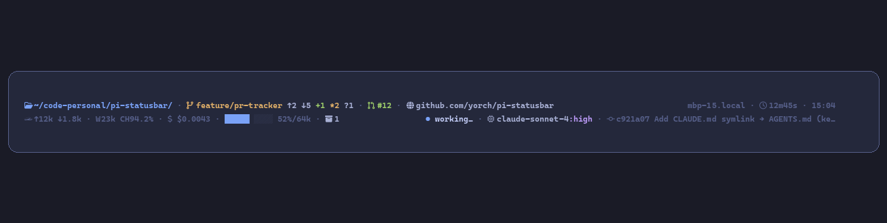

A live status bar for the pi coding agent — tokens, cache, cost, context, git, and more, colored through your theme.

pi install npm:@yorch/pi-statusbar
or from git: pi install git:github.com/yorch/pi-statusbar
Every segment renders through pi's theme tokens — switch themes and the bar re-skins itself.
Tokens, cache, cost, context bar, git, PR, stash, last commit, remote, path, model, session clock, statuses — compose your own row.
Eighth-block gradient with a fallback estimator after compaction. Warning >70%, error >90%.
Async branch, ahead/behind, staged/unstaged/untracked counts with a short TTL cache. Never blocks the TUI.
minimal · compact · default · full (two lines) — switch with /statusbar.
Auto-detects iTerm, WezTerm, Kitty, Ghostty, Alacritty; ASCII fallback otherwise.
All optional — add a statusbar key to ~/.pi/agent/settings.json:
| Key | Default | Description |
|---|---|---|
enabled | false | Install the footer automatically on session start |
preset | default | minimal · compact · default · full |
nerd | auto | Force Nerd Font glyphs; force with STATUSBAR_NERD_FONTS=1/0 |
separator | dot | dot · pipe · space |
contextBar | true | Show the context progress bar |
pr | true | Show the PR segment (clickable #n via OSC 8, via gh) |
| Preset | Lines | Segments |
|---|---|---|
minimal | 1 | path · git · context |
compact | 1 | model · git · cost · context |
default | 1 | tokens · cache · cost · context · statuses · git · path · model + session |
full | 2 | path · git · pr · remote → hostname · session · time / tokens · cache · cost · context · stash → statuses · model · commit |